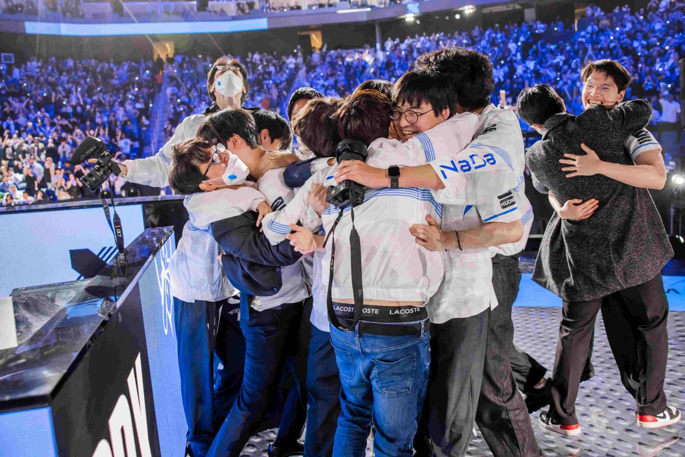

DRX consigue la hazaña y se corona campeona mundial de League of Legends
El conjunto surcoreano se alzó como el mejor del planeta luego de una dramática serie en San Francisco
24 equipos, 94 enfrentamientos y 37 días de competencia. Esto definió lo que fue la edición 2022 del Campeonato Mundial de League of Legends, el cual llegó a su épico desenlace desde el Chase Center de San Francisco con un legendario mejor de 5.
Con dos de las mejores escuadras que tiene para ofrecer el competitivo de League of Legends, T1 y DRX se dieron a la tarea de convertirse en algo más que campeones del mundo, al tener una narrativa más grande que el mismo juego bajo sus hombros.
Así, la esperada cita entre estos gigantes de Corea, liderados por Lee "Faker" Sang-hyeok y Kim "Deft" Hyuk-kyu, trajo al escenario mucha expectativa ya que se verían las caras por última ocasión en la temporada buscando alcanzar la cima, con T1 llegando como el favorito a llevárselo todo y DRX siendo el caballo negro de la competencia. Todo estaba listo para un duelo que quedaría para la historia y que marcaría a una nueva generación.
Se alza un nuevo campeón en tierra norteamericana
Luego de una emotiva ceremonia de apertura cortesía de Mastercard, la primera partida dio comienzo con un par de intercambios sangrientos en mid y bot lane, lo que de principio dejaría el marcador sin cambios. Sin embargo, T1 empezaría a mover sus fichas con buenas combinaciones de ataques, lo que previno que DRX se hiciera con el Ojo del Heraldo al minuto 9.
Ambos equipos se volvieron a encontrar en varias ocasiones para intentar conseguir objetivos, situaciones en las que T1 siempre se mantuvo adelante al hacerse con estos y con algunos asesinatos. Lentamente la partida se comenzaría a decantar por el tricampeón mundial, ya que estos manejaron el control del juego con una avalancha de poder a partir del juego medio.
Con la ventaja de oro y el alma elemental en sus manos, para el minuto 31 llegaría el cierre del primer enfrentamiento cuando T1 empujó con todo a través de la base enemiga, marcando un golpe de autoridad por parte de la dinastía en esta serie final.
Para el segundo juego, T1 tomaría una postura súper agresiva motivados por su anterior victoria, por lo que el juego temprano estuvo marcado con los asesinatos recolectados por la legendaria escuadra. Pero, si bien muchos pensaron que con esto vendría una tendencia para el resto de la partida, DRX cambiaría por completo las cosas en unos cuantos minutos.
Aprovechándose de algunas fallas en posicionamiento, DRX remontaría la desventaja inicial a base de kills y placas de torretas, con lo que T1 comenzaría a sentir la creciente presión enemiga. Los intercambios pasaron de ser ofensivos a más estratégicos a medida que el encuentro llegaba a la fase tardía, siendo esto algo crucial ya que T1 se recuperaría luego de perder su ventaja.
Con el contador de tiempo rompiendo la barrera de los 40 minutos, T1 parecía verse como favorito para lograr una victoria más y ponerse en matchpoint, pero esta esperanza desaparecería en un solo parpadeo. En una gran pelea en la que T1 se vió desplazado, DRX conseguiría denegar un intento de Barón Nashor al neutralizar a casi todos sus oponentes, lo que dejó la base del tricampeón indefensa y el nexo en bandeja de plata.
El tercer duelo fue uno de los más parejos de todo el mejor de 5, ya que ambos conjuntos coreanos mantendrían una fuerte igualdad durante los primeros 10 minutos, a la vez de intercambiar asesinatos y dragones. De cara a los 20 minutos, DRX comenzaría a amenazar la integridad de T1 al asegurar varias kills en muy poco tiempo, por lo que un segundo asalto a su favor parecía más que posible.
Aquí entraría en acción Lee "Gumayusi" Min-hyeongi junto a su Varus, el cual terminaría por ser determinante para alcanzar la victoria nuevamente con sus 2 robos masivos del Barón Nashor. DRX intentó mantenerse en pie con un dragón asegurado al minuto 30, pero no sería suficiente para detener el impulso de T1 fortalecidos por la mejora del Barón.
Sin nada que perder, T1 se abriría paso en la cuarta partida con una excelsa primera sangre en manos de Ryu "Keria" Min-seok, quien aprovechó esto para marcar la diferencia en el carril inferior. A pesar de esto, DRX no se quedaría atrás y le daría prioridad a Deft y Hong "Pyosik" Chang-hyeon, consiguiendo 4 asesinatos entre los 2 jugadores estrella.
DRX se encontraría en una posición privilegiada al tener el control de la partida en la palma de su mano, algo en lo que no tardarían capitalizar tan pronto como fuera posible. Los asesinatos se comenzaron a acumular rápidamente y la ventaja de recursos sobrepasó la barrera de los 5 mil de oro, por lo que la preocupación comenzó a notarse en la arena entre los fanáticos de T1.
Al ritmo de Silver Scrapes, T1 inició el enfrentamiento final con mucha iniciativa en la Grieta, al quedarse con la primera sangre y un dragón infernal en los primeros 5 minutos. Por otro lado, Hwang "Kingen" Seong-hoon haría de las suyas y vencería por su cuenta a Choi "Zeus" Woo-je con su Aatrox, para después ayudar a DRX a quedarse con el primer Heraldo.
Previo al juego medio, DRX decidió mantener su enfoque ofensivo al atacar de manera constante a través de rotaciones, mientras que T1 se decantó por empujar las líneas para así crear una presión dividida a largo plazo. La ventaja de asesinatos le permitió a DRX moverse y jugar con seguridad a través del mapa, pero esto les sacaría factura debido a una jugada inesperada a los 25 minutos.
La jugada que definió el torneo llegó al minuto 40, cuando luego de mucho titubeo entre ambos equipos, una gran pelea por equipos se desencadenó por el Dragón Ancestral. Aquí sería cuando Mun "Oner" Hyeon-jun arriesgaría todo por quedarse con la mejora, pero la composición de DRX sería demasiado para este y todo T1 caería uno por uno en cuestión de segundos, lo que sentenció la partida y le daría a DRX el título del mejor equipo del mundo.
De esta manera y tal y como ocurrió durante el MSI 2022, la dinastía más grande del League of Legends deberá esperar más tiempo para volver a la cima, ya que el trono ahora le pertenece a una nueva escuadra que pasó de ser underdog a convertirse en campeona mundial.
Con un largo trayecto desde el Play-In en Ciudad de México y con jugadores ambiciosos y hambrientos de gloria, DRX se lleva a casa su primera Copa del Invocador y se inscribe en el Olimpo de los campeones junto a escuadras como DWG KIA y Edward Gaming, con una travesía legendaria en su camino a la gloria.